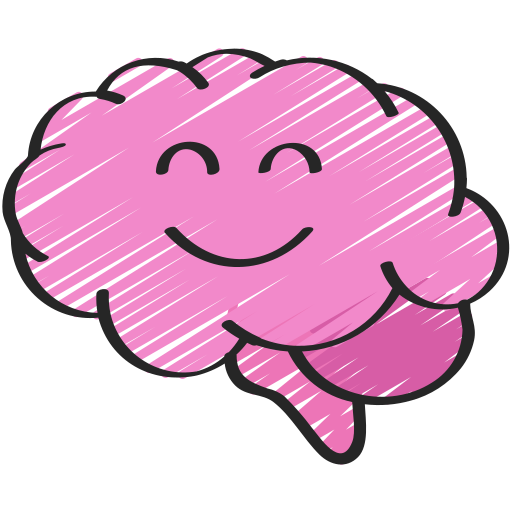
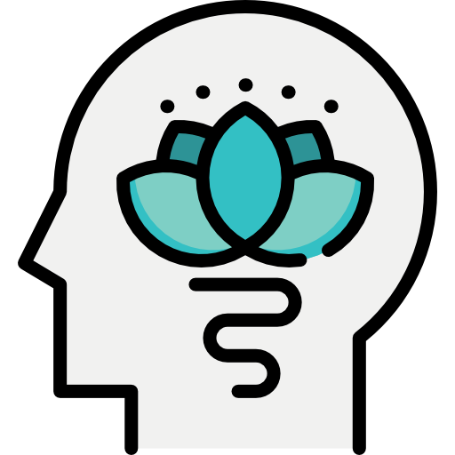
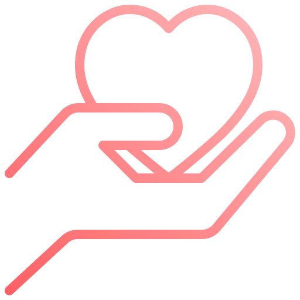

Pain, tight muscles, or headaches are common complaints treated.
Flexibility, spine movement, increased circulation, pain relief, and
muscle relaxation are some effects of this treatment. A more focused
session rather than a full body treatment is also available.

Brain Healing & Optimization
Restrictions in and around the brain and spinal cord are released,
resulting in increased nutrition to the brain, clearing of waste
products, drainage, reduced inflammation, reduced scar tissue, and
better cognitive processing. This treatment is appropriate for
concussions, TBIs, and most neurological dysfunction and diseases.

Relaxation
The parasympathetic nervous system is activated and balanced through
treatment which has a calming effect. Disruption of the digestive
system due to anxiety and stress can also be addressed with this
treatment achieving a more complete relaxation.

Somato Emotional Release
Interestingly, emotion can be stored in body tissue during injury or
trauma. Somato Emotional Release (SER) allows for the release of
tension patterns that are held because of an emotional component.
However, treatment is only intended for use in conjunction with
psychotherapy.
What to Expect
Light pressure is primarily used, since the craniosacral rhythm is
very delicate. Tigntness and tension patterns in the muscle and
fascia are found and treated. Energy work can also be used when
nessesary.
You will remain fully clothed during treatment. With that in mind,
wear comfortable clothing Ex: t-shirt, stretchy pants, sweatpants.
Sanitation precautions are taken for the health and wellbeing of
everyone involved. The office is equipped with a HEPPA filter for
clean air. Surfaces are wiped clean before and after each
appointment.
Reviews
Craniosacral is amazing as is Pam! No one better! Do not hesitate to
make an appointment! Your body will thank you!
-Becky S.
Pam is a very detailed, understanding, and the most kind therapist
I've ever gone to. I would highly recommend her to anyone. Her
understanding and flexibility is a five-star.
-Mary T.
Pam is knowledgeable, thorough, present and most certainly
therapeutic. Instead of forcing the body to comply, her
understanding of the body, mind and spirit connection enables her to
use gentle touch to restore balance.
-Vincent D.
Pam is AMAZING! After a very long time of struggling with hip, back,
and leg pain, Pam was able to relieve it all in just a few visits.
It was not what I expected at all. But it is exactly what my body
needed...and done with great care and compassion. This is the place
to go...no question!!!
-Linda O.
Contact Me
Call or text: 603-978-0500
Please allow 24-48 hours response time
I've been a practicing Massage Therapist since 2009, treating clients
with Deep Tissue and Swedish Massage for the first few years. However, I
have transitioned to practicing Craniosacral Therapy exclusively. The
results are just as good, if not better, with a much more gentle
approach. I used to live by the saying, "no pain, no gain" but I've
found that isn't the case when it comes to Craniosacral Therapy.
Craniosacral Therapy through the Upledger Institute has opened my eyes
to amazing and effective alternatives to the typical massage treatment.
I offer my clients a fix for muscle tension issues as well as relaxation
and stress relief. In addition to muscle and fascial tension release, I
also specialize in treating brain injury and neurological conditions.
Common treatment of conditions include concussions, migraines, and TBIs.
I couldn't be happier to offer both relaxation and pain management
through Craniosacral Therapy.
The human body is miraculous, and we're only beginning to understand
it's capabilities. My approach is a combination of both eastern and
western methods with a sound foundation in anatomy and science. If you
need a positive, energetic and caring Craniosacral Therapist, please
don't hesitate to contact me to find out how I can help you restore and
revitalize yourself.